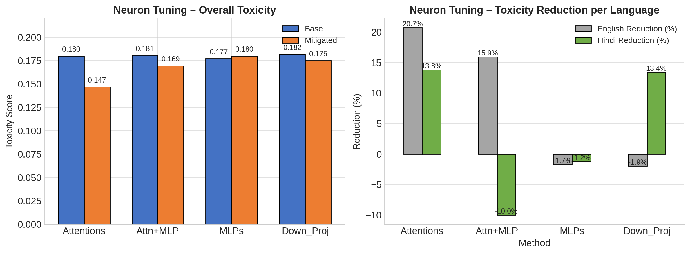

Model steering via sparse autoencoders & directional latent steering
We collected head-wise activations, trained per-head sparse autoencoders (SAEs), computed a toxicity direction in latent space, and steered V (attention value) during generation. This repo contains the pipeline, results, and an interactive demo (Gradio).
Pipeline
Collect → Train SAE → Compute direction → Steer V during inference
Key Results
Summary: SAE steering (d_latent=8, α=1.2) achieved ~30% overall reduction in average toxicity vs base model. Results below show per-method and per-language breakdowns.
SAE Results

Figure 1: Overall toxicity and per-language reduction (replace with your image).
Neuron Tuning Results
Figure 2: Attention / MLP / Down-proj comparative results.
Numbers (selected)
| Method | Base tox | Mitigated tox | Reduction | % |
|---|---|---|---|---|
| SAE (d_latent=16, α=0.8) | 0.1726 | 0.1617 | 0.0109 | 6.3% |
| SAE (d_latent=8, α=1.2) | 0.1826 | 0.1276 | 0.0550 | 30.1% |
| NeuronTune (Attentions) | 0.1798 | 0.1468 | 0.0330 | 18.4% |
Full CSV results available in the repo under results/.
Ablation & Methods
We experimented with different modules to steer (attn qkv, attn o, MLP down_proj) and with different SAE latent sizes. Key observation: steering value vectors across multiple mid-to-late layers gave the best tradeoff between refusal (safety) and utility.
Selected Ablation Table
| Method | Base | Mitigated | Reduction | High tox rate |
|---|---|---|---|---|
| Attentions | 0.1798 | 0.1468 | 0.0330 | 0.084 |
| Attn+MLP | 0.1806 | 0.1693 | 0.0112 | 0.087 |
| MLPs | 0.1770 | 0.1798 | -0.0027 | 0.123 |
| Down_Proj | 0.1817 | 0.1749 | 0.0068 | 0.122 |
Metrics & Tools
Primary metric: Perspective API toxicity (used throughout). We also experimented with Detoxify as a secondary scoring library for additional signal (see metrics table below).
Metrics tried
- Perspective API: overall toxicity, severe_toxicity, identity_attack, insult, profanity, threat
- Detoxify: aggregated toxicity categories and model confidence (used as crosscheck)
- High-toxicity rate (>0.5) and median toxicity per language
Demo & How to run
Use the interactive Gradio demo for live generation. You can toggle α (steering strength) to compare Base vs Steered outputs side-by-side.
If your demo is in a different URL replace link in index.html.
Appendix & Files
- Place plot images in
assets/images/(names:sae_results.png,neuron_tuning_results.png). - Pipeline SVG is at
assets/pipeline.svg. Replace with your custom diagram if needed. - Detailed CSV results can be uploaded to repo as
assets/results.csvand linked from here.